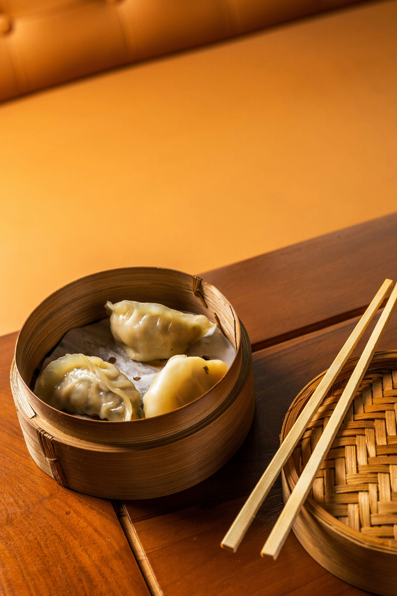

Dumplings

Description
Dumplings are soft pieces of dough filled with vegetables, meat, or other flavorful ingredients.
They are commonly steamed, boiled, or fried and are popular in many Asian cuisines. Dumplings are
enjoyed as a snack, appetizer, or main dish.
Ingredients
- Dumpling wrappers
- Minced chicken or vegetables
- Onions
- Garlic
- Soy sauce
- Salt
- Black pepper
- Cooking oil
Steps
- Prepare the filling using vegetables or minced meat.
- Add garlic, soy sauce, salt, and pepper to the filling.
- Place a small amount of filling in each wrapper.
- Fold and seal the dumplings carefully.
- Heat water in a steamer or pan.
- Steam the dumplings for 10-12 minutes.
- Remove the dumplings once fully cooked.
- Serve hot with dipping sauce.
Go back to the Home Page